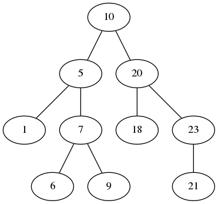

Nous abordons la notion de récursivité. Les arbres constitue une structure de données se définissant naturellement de manière récursive : un arbre, c'est une racine et éventuellement un ensemble de sous-arbres fils.
La récursivité permet de définir les arbres ainsi que la plupart des algorithmes traitant des arbres de manière très élégante, très concentrée et très facile à lire (une fois que l'on a acquis le coup d'œil).
class Arbre(object):
def __init__ (self, valeur = etiquette, sag = None, sad = None):
self.etiquette = valeur
self.fg = sag
self.fd = sad
def hauteur (self):
if (self. fg != None):
hauteurAgauche = self. fg. nbNoeuds ()
else:
hauteurAgauche = 0
if (self. fd != None):
hauteurAdroite = self. fd. nbNoeuds ()
else:
hauteurAdroite = 0
return 1 + max (hauteurAdroite + hauteurAgauche)
def nbNoeuds (self):
if (self. fg != None):
noeudsAgauche = self. fg. nbNoeuds ()
else:
noeudsAgauche = 0
if (self. fd != None):
noeudsAdroite = self. fd. nbNoeuds ()
else:
noeudsAdroite = 0
return 1 + noeudsAgauche + noeudsAdroite
Créer une représentation graphique d'un arbre comme celui-ci :

n'est pas chose simple. Il faut pour cela bien disposer les nœuds et les branches. Plutôt que d'écrire une méthode qui le fait mal, nous allons utiliser une commande Linux qui crée un fichier png (ou pdf, jpg, ...) représentant un arbre (plus généralement un graphe) à partir d'une description. Pour l'arbre ci-dessus, la représentation est la suivante :
graph abr1 {
10 -- 5;
5 -- 1;
5 -- 7;
7 -- 6;
7 -- 9;
10 -- 20;
20 -- 18;
20 -- 23;
23 -- 21;
}
Vous pouvez copier/coller ce contenu dans un fichier. Nommons ce fichier abr.dot.
La première ligne indique que l'on décrit un graphe (un arbre est un type particulier de graphe) qui se nomme arb1. Tout ce qui se trouve ensuite entre accolades décrit les nœuds et les branches de cet arbre.
Chaque ligne est de la forme :
étiquette-nœud-père -- étiquette-nœud-fils; qui
indique qu'il y a une branche entre un nœud
d'étiquette étiquette-nœud-père vers un nœud
d'étiquette étiquette-nœud-fils. Les deux tirets
entre les deux étiquettes et le point-virgule sont indispensables.
L'ordre dans lequel les branches sont listées est important : il
faut toujours que la branche du fils gauche d'un nœud apparaisse
avant la branche du fils droit.
À faire : écrire une fonction qui affiche à l'écran la description au format indiqué ci-dessus d'un arbre. Ensuite :